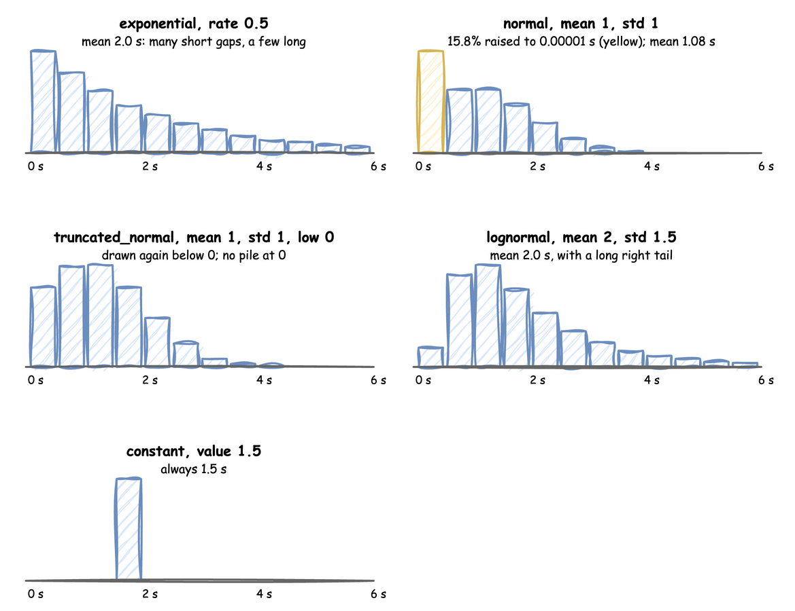

Arrivals and Services: Sampler and the Distributions
Two building blocks set the timing of every simulation. An arrival stream decides how often a new entity enters the model: an order, a part, a visitor. A service decides how long a piece of work takes: machining a part, checking out a basket, repairing a machine. Both are distributions of time in seconds, and every time one is needed, a value is drawn from the distribution with its current parameters.
| Building block | Answers | Used by | Example |
|---|---|---|---|
| Arrival | How long until the next entity? | the arrival loop, which starts a task for each one | a part every 2 s on average |
| Service | How long does this piece of work take? | a task, while it holds its resource | 3 s of milling, give or take 0.5 s |
Distributions
Five distributions are available. Each reads only its own parameters, and a value outside the range below is refused when the simulation is built, with the YAML line when it comes from a blueprint:
dist |
Parameters | Allowed | Shape | Typical use |
|---|---|---|---|---|
exponential |
rate |
above 0 | many short gaps, a few long; mean 1 / rate |
arrivals that happen independently: orders, calls, visits |
normal |
mean, std |
std 0 or more; 0 gives the mean every time |
symmetric around the mean | work with a typical time, when std is small next to mean |
truncated_normal |
mean, std, low (0 by default) |
std 0 or more; with std 0, mean at least low |
a normal that never goes below low |
work with a typical time and a hard minimum |
lognormal |
mean, std |
mean above 0; std 0 or more |
never negative, with a long tail of slow cases | repairs, support calls, anything now and then much slower |
constant |
value |
0 or more | the same value every time, with no random draw | fixed times: a conveyor, a set-up, a zero-time step |
mean and std are always in seconds and describe the times you get, including for lognormal, which converts them to the parameters of the underlying normal itself.
The chart shows 200,000 draws from each, in half-second bins:

Exponential
rate is per second: 0.5 is one every 2 seconds on average, and 2.0 is two per second. It is the usual choice for arrivals, because it is what you get when entities arrive independently of each other.
Normal
A normal draw can be negative. Every time is raised to at least 0.00001 seconds, so when std is large next to mean many draws land on that floor and the average time goes up: with mean: 1 and std: 1, 15.8% of draws are raised and the mean becomes 1.08, as the yellow bar in the chart shows. Use truncated_normal for such a time.
Truncated Normal
A draw below low is thrown away and drawn again, so no draws pile up at the limit, and the mean is the truncated distribution's own: 1.29 s for mean: 1, std: 1, low: 0. Far into the tail, where plain draws would almost never land, it uses an exponential proposal (Robert, 1995), so it stays exact and fast for any low.
Lognormal
Constant
A constant uses no random number, so adding one does not change the draws of the others in a seeded run. value: 0 gives a step that takes no time.
How a Draw Works
Every draw goes through a Sampler, which holds the random generator. A task draws its service time when it gets its resource, and the arrival loop draws the next gap when it starts waiting. Each draw reads the distribution's current parameters, so a change made while the simulation runs applies from the next draw.
Seeding. A seed makes every draw the same on every run, as long as the model draws in the same order:
In the low-level API you draw yourself, from the current values:
seconds = sampler.sample(milling) # one draw, in seconds, from the current values
A Sampler created with no generator draws nothing at random: every draw is the distribution's mean, or its value. That gives the time a model takes on average, which is useful in a test:
fixed = Sampler() # no random generator: every draw is the mean, or the value
assert fixed.sample(milling) == 3.0 and fixed.sample(gap) == 2.0
SimPy and Dynamic DES
SimPy has no distributions: a SimPy model draws its own times, usually with random.expovariate(0.5) for a gap or random.normalvariate(3.0, 0.5) for a service, and writes yield env.timeout(...) with the result. Nothing checks the parameters, a negative draw is passed to timeout, which raises, and the parameters are ordinary variables that only the model's code can change.
Dynamic DES names each distribution and its parameters once, in a DistributionConfig. The parameters are checked when the model is built, every draw goes through one seeded Sampler and is raised to at least 0.00001 seconds, and the configuration lives in the registry, so a connector or a scenario can change it while the simulation runs.
Under Live Changes
Each parameter has a path in the registry: <sim_id>.arrival.<name>.rate for an exponential arrival, <sim_id>.service.<name>.mean and .std, .low for a truncated normal, and .value for a constant. A connector, a scenario or a process can change it while the simulation runs, as Live Parameters explains:
- The next draw uses the new value. A part already being machined keeps the time it drew, and the arrival already being waited for keeps its gap.
- A value outside the range in the table is refused with an error log line, and the old value stays, as it would be refused at build:
try:
DistributionConfig(dist="normal", mean=3.0, std=-1.0)
except ValueError as error:
print(error) # normal std must be 0 or more, got -1.0
- The distribution family is fixed when the simulation is built: there is no path that turns a
normalinto anexponentialwhile it runs.
Limits and Common Mistakes
- A wide
normal. Whenstdis half ofmean, 2.3% of draws fall below 0 and are raised to the floor, and atstdequal tomeanit is 15.9%, so the average time rises. Usetruncated_normal. - Rate against mean.
exponentialtakes arateper second, not a mean gap: an order every 30 seconds israte: 0.0333, not30. - A seed and the timestamps. A seed fixes the draws and so the simulation times, but each record's
timestampalso depends on when the run started, unlesslogical_start_timeis set, as Time and Pacing explains. - Queues grow faster than the averages suggest. Two models with the same mean times but different spread have different queues: more spread means longer waits.
- More distributions are planned, including one built from values taken from real data; see the Roadmap.